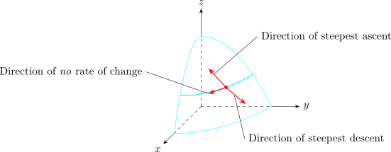

1.4 Maximising the Directional Derivative
Suppose that we have a functional of two or three variables and we consider all possible directional derivatives of \(f\) at a given point.
Question: In which direction does \(f\) change fastest.
Suppose \(f\) is a differentiable function of 2 or 3 variables, the maximum value of the directional derivative. \(D_u\hspace {0.1cm} f\big (\overrightarrow {x}\big )\) is \(\big |\nabla f\big (\overrightarrow {x}\big )\big |\) and it occurs when \(\overrightarrow {u}\) has the same direction as the gradient vector.
Proof \begin {align*} D_u f & = \nabla f\cdot \overrightarrow {u}\\ & = \big |\nabla f\big |\hspace {0.1cm}\big |\overrightarrow {u}\big |\hspace {0.1cm} \cos \theta \\ & = \big |\nabla f\big |\cos \theta \end {align*}
where \(\theta \) is the angle between \(\nabla f\) and \(\overrightarrow {u}\).
Therefore, the maximum value of \(D_u f\) is \(\big |\nabla f\big |\) and it occurs when \(\theta = 0\).
Direction derivative is maximum in the direction of the gradient vector, zero in directions orthogonal to the gradient vector and minimum in the direction opposite the gradient vector.

- 1.
- If \(f(x,y ) = xe^y\) , find the rate of change of \(f\) at the point \(P(2,0)\) in the directional of \(Q\big (1/2,2\big )\).
- 2.
- In what direction does \(f\) have the max rate of change? What is that max?
Solution.
- 1.
- \(\displaystyle {\nabla f = f_x\,\textbf {i} + f_y\,\textbf {j} = e^y\,\textbf {i} + xe^y\,\textbf {j}}\)
\(\implies \hspace {1cm}\displaystyle {\nabla f(2,0) = \textbf {i} + 2\,\textbf {j}}\)
The unit vector \(\displaystyle {\overrightarrow {PQ} = \langle -1.5,2\rangle }\) is \(\displaystyle {\overrightarrow {u} = \bigg \langle \dfrac {-3}{5},\dfrac {4}{5}\bigg \rangle }\)
\begin {align*} D_u f(2,0) & = \langle 1,2\rangle \cdot \bigg \langle \dfrac {-3}{5},\dfrac {4}{5}\bigg \rangle \\ & = 1\\ \end {align*}
- 2.
- \(\displaystyle {\big |\nabla f(2,0)\big | = \sqrt {5}}\) Direction of max rate of change is \(\displaystyle {\langle 1,2\rangle }\)
Suppose that the temperature at a point in space \((x,y,z)\) is given by \[T(x,y,z) = \frac {80}{1 + x^2 + 2y^2 + 3z^2}\] where \(T\) is measured in Celsius and \(x,y,z\) in metres. In which direction does the temperature increase fastest at the point \((1,1,-2)\)? What is the max rate of increase?
Solution. \begin {align*} \nabla T & = \frac {\partial T}{\partial x}\,\textbf {i} + \frac {\partial T}{\partial y}\,\textbf {j} + \frac {\partial T}{\partial z}\,\textbf {k}\\ & = \frac {-160x}{\big (1 + x^2 + 2y^2 + 3z^2\big )^2}\,\textbf {i} - \frac {320y}{\big (1 + x^2 + 2y^2 + 3z^2\big )^2}\,\textbf {j} - \frac {480z}{\big (1 + x^2 + 2y^2 + 3z^2\big )^2}\,\textbf {k}\\\\ & =\frac {160}{\big (1 + x^2 + 2y^2 + 3z^2\big )^2}\big ( -x\,\textbf {i}-2y\,\textbf {j} -3z\,\textbf {k}\big )\\ \end {align*}
At the point \((1,1,-2)\)
\[\nabla T (1,1,-2) = \frac {160}{256}\big (-\textbf {i} - 2\,\textbf {j} + 6\,\textbf {k}\big ) = \frac {5}{8}\big (-\textbf {i} - 2\,\textbf {j} + 6\,\textbf {k}\big ) \]
The temperature increases fastest in the direction \(\displaystyle {\frac {5}{8}\big (-\textbf {i} - 2\,\textbf {j} + 6\,\textbf {k}\big )}\) or the unit vector
\(\displaystyle {\frac {1}{\sqrt {41}}\big (-\textbf {i} - 2\,\textbf {j} + 6\,\textbf {k}\big )}\)
\begin {align*} \text {max. rate is}\hspace {0.5cm} \big |\overrightarrow {V}_T\big | & = \big |5/8\big (-\textbf {i} - 2\,\textbf {j} + 6\,\textbf {k}\big )\big |\\ & = \frac {5}{8}\hspace {0.1cm}\sqrt {41}\\ & \approx 4\ ^{\circ }\text {C/m}\\ \end {align*}
Find the directional derivative of \(\displaystyle {f(x,y,z) = \ln \big (1 + x^2 + y^2 + z^2\big )}\) at the point \(P(1,-1,1)\) in the direction of the vector \(V =\langle 2,-2, -3\rangle \)
Ans: \(\dfrac {-3}{2\sqrt {17}}\)
Questions on this section
Stuck on something here? Ask below and it stays attached to this topic.